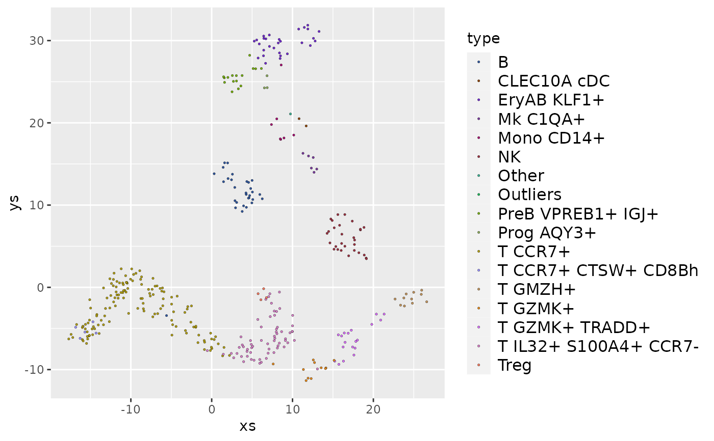

scale_fill_chameleon.RdThis is a thin wrapper to ggplot2::discrete_scale('fill', 'chameleon', ...), which uses
the colors chosen by invoking distinct_colors. The order of the colors is arbitrary. If
the data has some structure the colors should reflect, use one of the many palettes available in
R, or using data_colors for automatically matching the colors to the structure of
multi-dimensional data.
scale_fill_chameleon(
minimal_saturation = 33,
minimal_lightness = 20,
maximal_lightness = 80,
...
)Exclude colors whose saturation (hypot(a, b) in CIELAB color
space) is less than this value (by default, 33).
Exclude colors whose lightnes (l in CIELAB color space) is less
than this value (by default, 20).
Exclude colors whose lightnes (l in CIELAB color space) is more
than this value (by default, 80).
Additional parameters for discrete_scale.
library(ggplot2)
data(pbmc)
frame <- as.data.frame(pbmc$umap)
frame$type <- pbmc$types
ggplot(frame, aes(x=xs, y=ys, fill=type)) +
geom_point(size=0.75, shape=21, color="black", stroke=0.1) +
scale_fill_chameleon() +
theme(legend.text=element_text(size=12), legend.key.height=unit(14, 'pt'))
#> Warning: Removed 12 rows containing missing values (geom_point).
